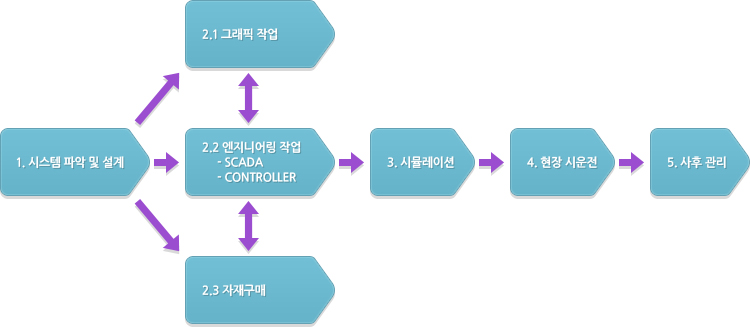

스마트 팩토리, 스마트팩토리, Smart Factory
1. Smart Factory 구축 목적 2. Smart Factory 시스템 기술 2.1 생산/설비 데이터 자동 수집 2.2 설비 및 물류 자동화 3. 스마트공장 구축 단계
스마트팩토리 |
스마트기계장비 |
스마트팜 |
|
내 |
사물인터넷 기반으로 생산의 전과정을 통합하여 비용과 시간을 절약함으로써 생산성 향상과 품질 향상을 최대화합니다. 공장 밖의 활동 즉 기획, 유통, 판매의 실시간 자료를 제조설비와 연결함으로써 공장 내 기기들이 즉시 반응하여 최적의 성과를 내는 시스템을 구축합니다. |
기존의 기계장비에 ICT기술을 적용하여, 장비의 운전 및 작업에 대한 데이터 취득 및 분석함로써 장비를 효율적으로 운영할 수 있습니다. 사물인터넷 기반인 SMIoT 컨트롤러가 장비와 장비 사이의 대화를 가능하게 할 뿐만 아니라 예측되는 고장의 예방이 가능합니다. |
하우스, 온실, 축사에 ICT기술을 접목시켜 원격/자동으로 작물과 가축의 생육환경을 적절하게 유지 관리합니다. 생육정보와 환경정보에 대한 데이터를 기반으로 최적의 생육환경을 조성하여 농축산물의 생산성과 품질 향상을 꾀할 수 있습니다. |
